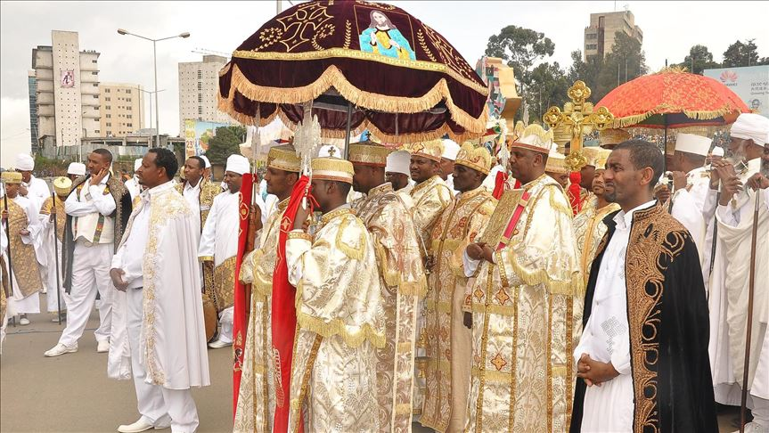
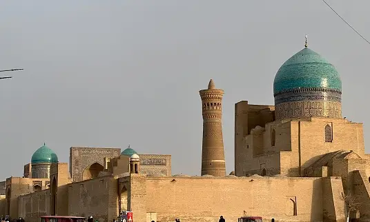

Christianity in Ethiopia
Christianity has deep historical roots in Ethiopia, dating back to the 4th century AD when the Kingdom of Aksum adopted it as the state religion. The Ethiopian Orthodox Tewahedo Church is one of the oldest organized Christian bodies in the world.
Unique aspects of Ethiopian Christianity include the celebration of Timkat (Epiphany), the unique liturgical language Ge'ez, and the belief that the Ark of the Covenant is housed in the Church of Our Lady Mary of Zion in Axum.
The Ethiopian Orthodox Church is known for its monolithic churches carved out of rock, such as those in Lalibela, which are a UNESCO World Heritage Site. These churches are active places of worship and pilgrimage.
Many Ethiopians are devout Christians and religion plays a crucial role in their daily lives. Major religious holidays like Meskel, Fasika (Easter), and Gena (Christmas) are celebrated with large gatherings, prayers, and traditional feasts.

Islam in Ethiopia
Islam was introduced to Ethiopia in the 7th century during the early days of the Muslim community. The first hijra (migration) saw a group of Prophet Muhammad's followers seeking refuge in the Christian kingdom of Axum, where they were granted protection by King Negus.
Today, Islam is practiced by a significant portion of the Ethiopian population, particularly in the eastern and southeastern regions of the country. The historic city of Harar is a major center of Islamic culture and learning in Ethiopia and is considered the fourth holiest city in Islam.
Harar is renowned for its old walled city, which contains numerous mosques, shrines, and traditional houses. The city is also famous for its unique tradition of feeding hyenas, which is believed to bring blessings and good fortune.
Islamic festivals such as Eid al-Fitr and Eid al-Adha are widely celebrated, with communal prayers, feasting, and charity being key components of these celebrations. The Muslim community in Ethiopia is known for its tolerance and peaceful coexistence with followers of other religions.
Indigenous Beliefs and Other Religions
In addition to Christianity and Islam, there are various indigenous religions practiced by different ethnic groups in Ethiopia. These traditional beliefs often involve the worship of nature, spirits, and ancestors.
The Oromo people, for instance, practice Waaqeffanna, which involves the worship of Waaqayoo (God) and reverence for natural elements like mountains, rivers, and trees. Rituals, ceremonies, and festivals play an important role in these indigenous belief systems.

Other smaller religious communities include Ethiopian Jews, also known as Beta Israel, who have a long history in the country and have preserved unique religious practices and customs.
Ethiopia is known for its religious diversity and tolerance. Despite the differences in beliefs and practices, there is a strong sense of respect and coexistence among the various religious communities.